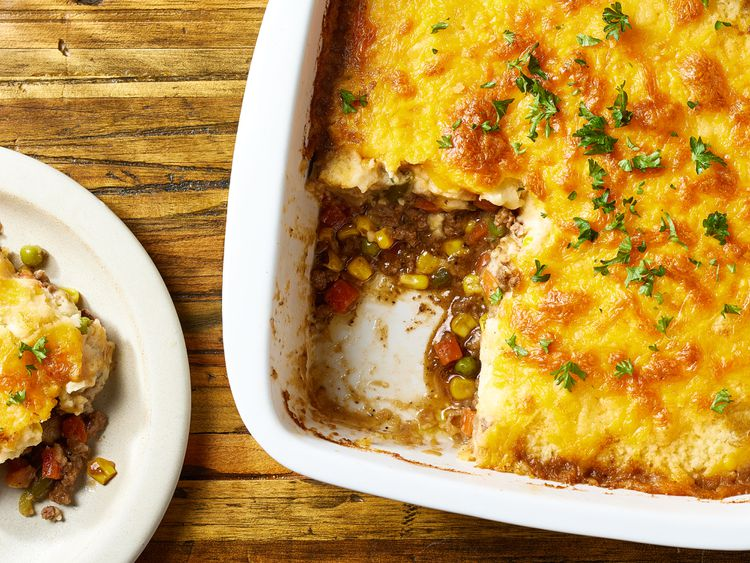

Lasagna

Easy shepherd’s pie — the name says it all with this recipe. This meaty
dish is comforting and hearty, with cream cheese added to the mashed
potato topping for irresistible flavor, all in just a few simple
steps.
Ingredients
- Ground Beef
- Hot Mashed Potatoes
- Cream Cheese
- Cheddar Cheese
- Garlic
- Frozen Mixed Vegetables
- Beef Gravy
Steps
-
Step 1: Preheat the oven to 375 degrees F (190 degrees C). Gather all
ingredients.
-
Step 2: Brown ground beef in a large skillet. Drain grease; return beef
to the skillet.
-
Step 3: Meanwhile, combine potatoes, cream cheese, ½ cup cheese, and
garlic in a bowl until well blended.
- Step 4: Stir vegetables and gravy into ground beef.
- Step 5: Transfer filling to a 9-inch square baking dish.
-
Step 6: Cover filling with potato mixture and remaining ½ cup cheese.
-
Step 7: Bake in the preheated oven until heated through, about 20
minutes.
Home